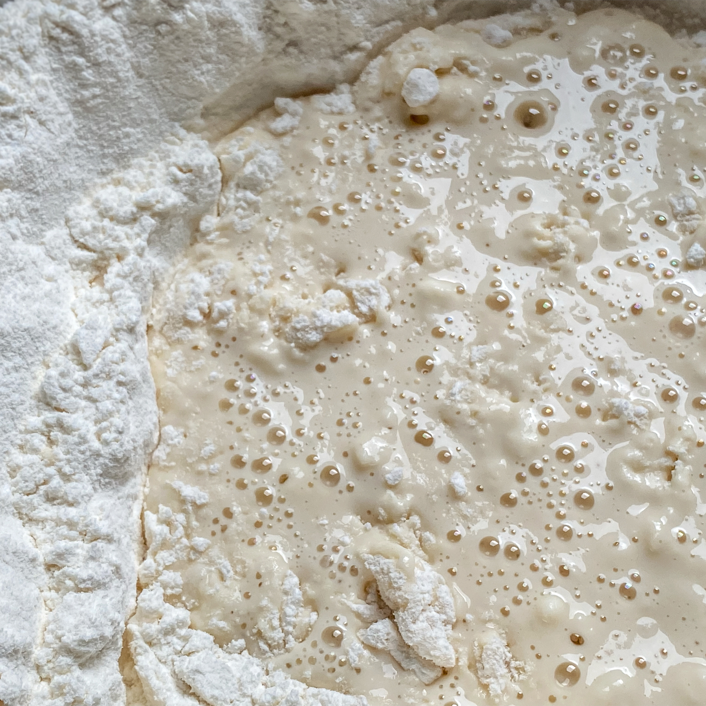
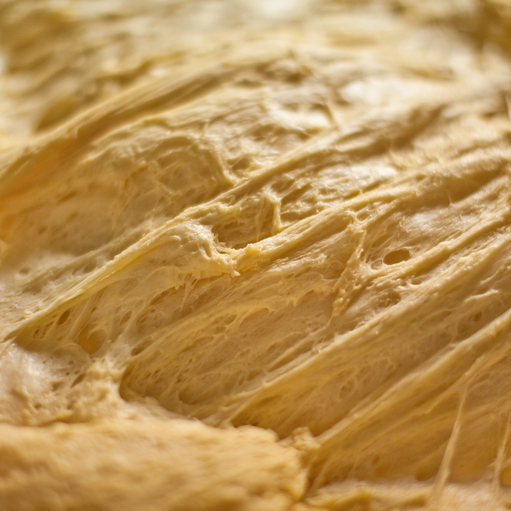
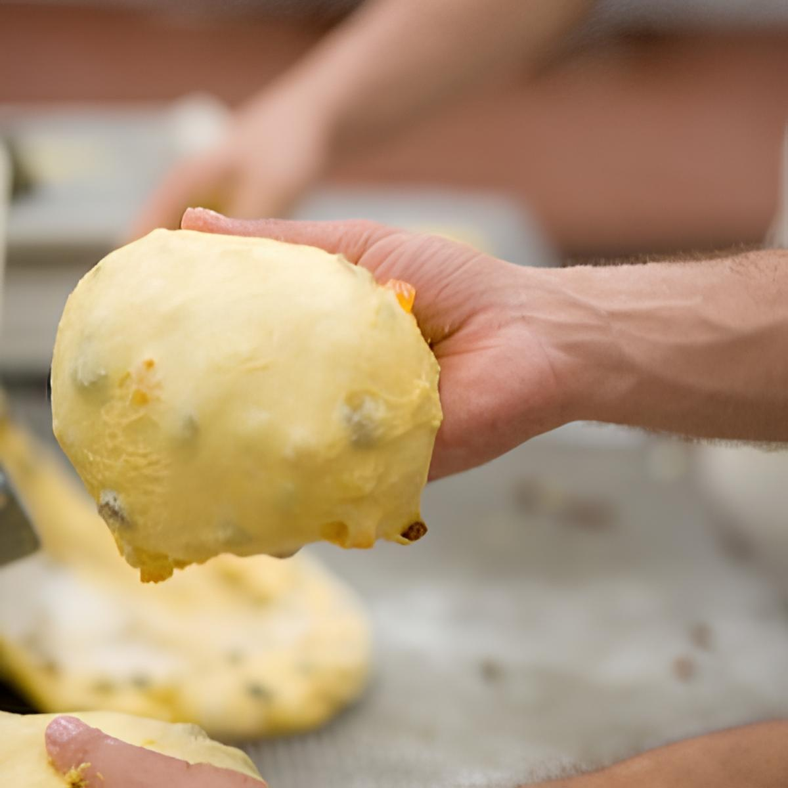
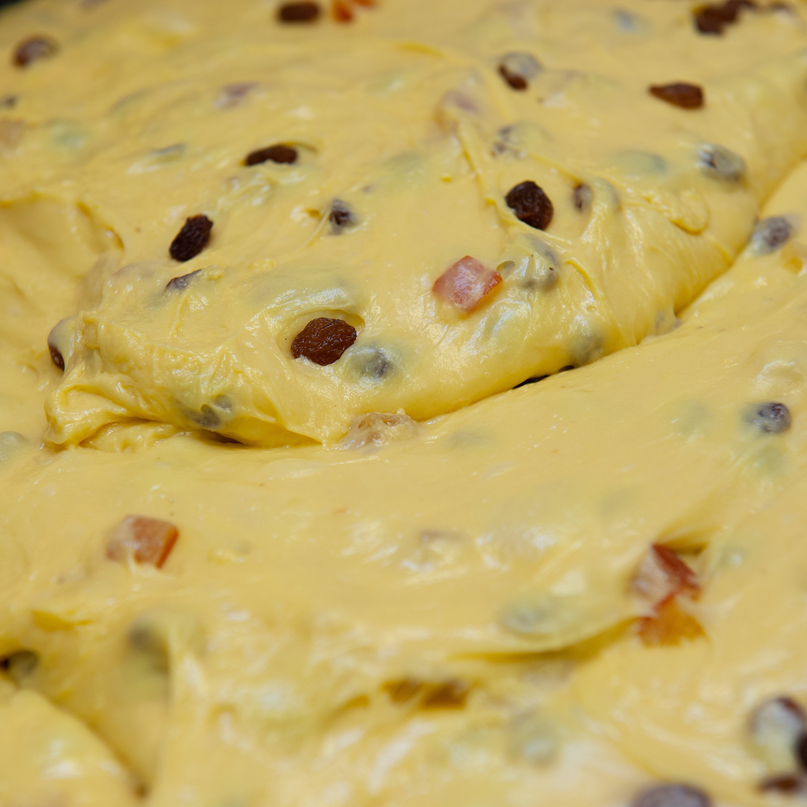
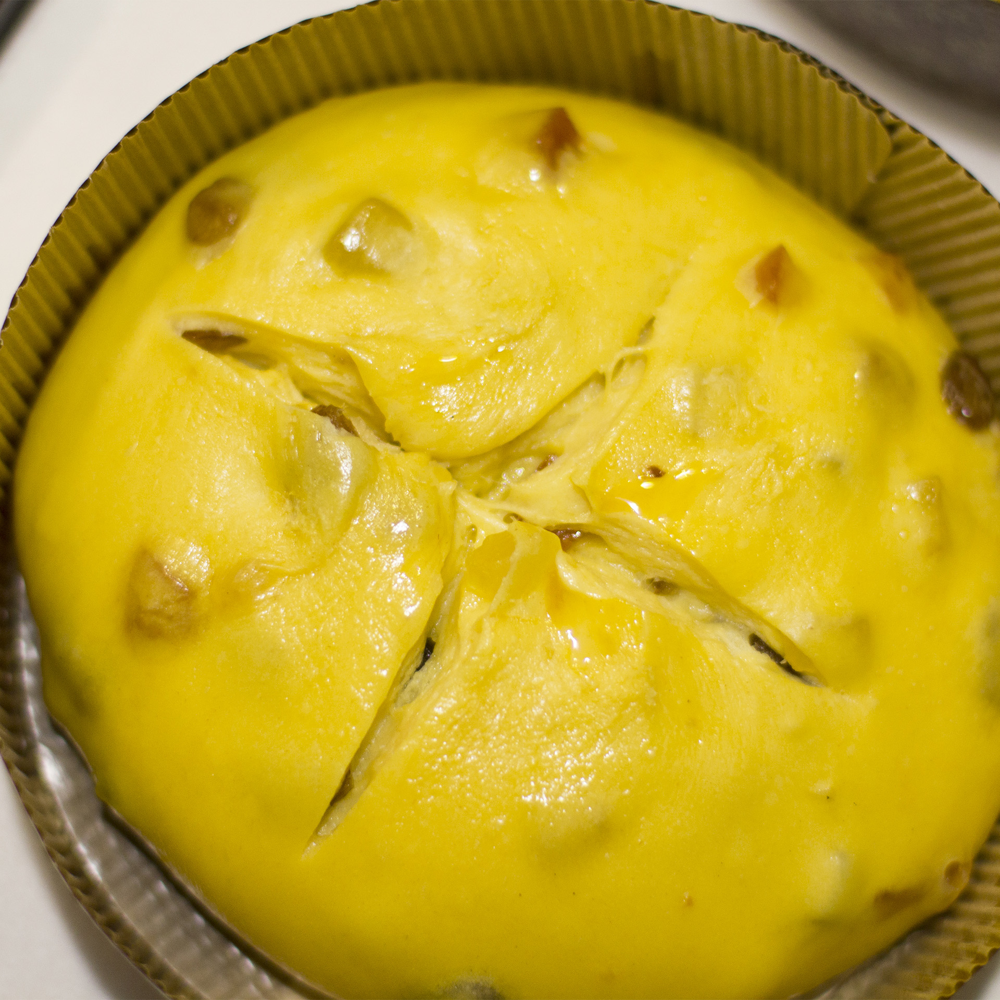
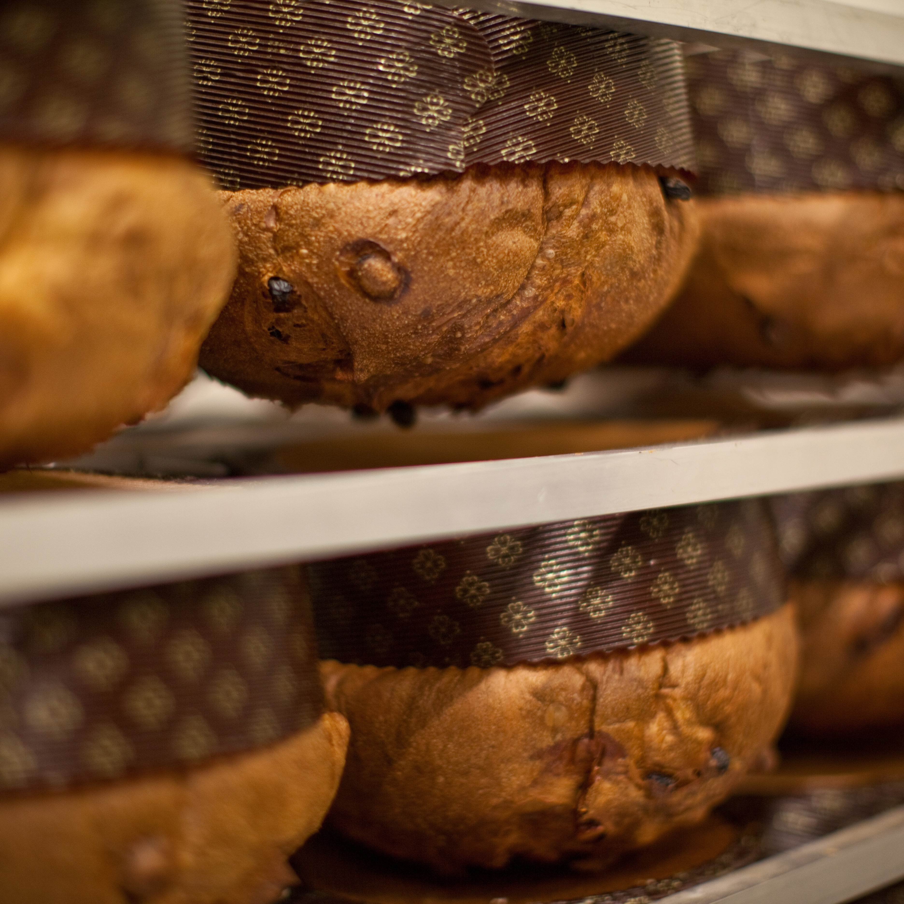
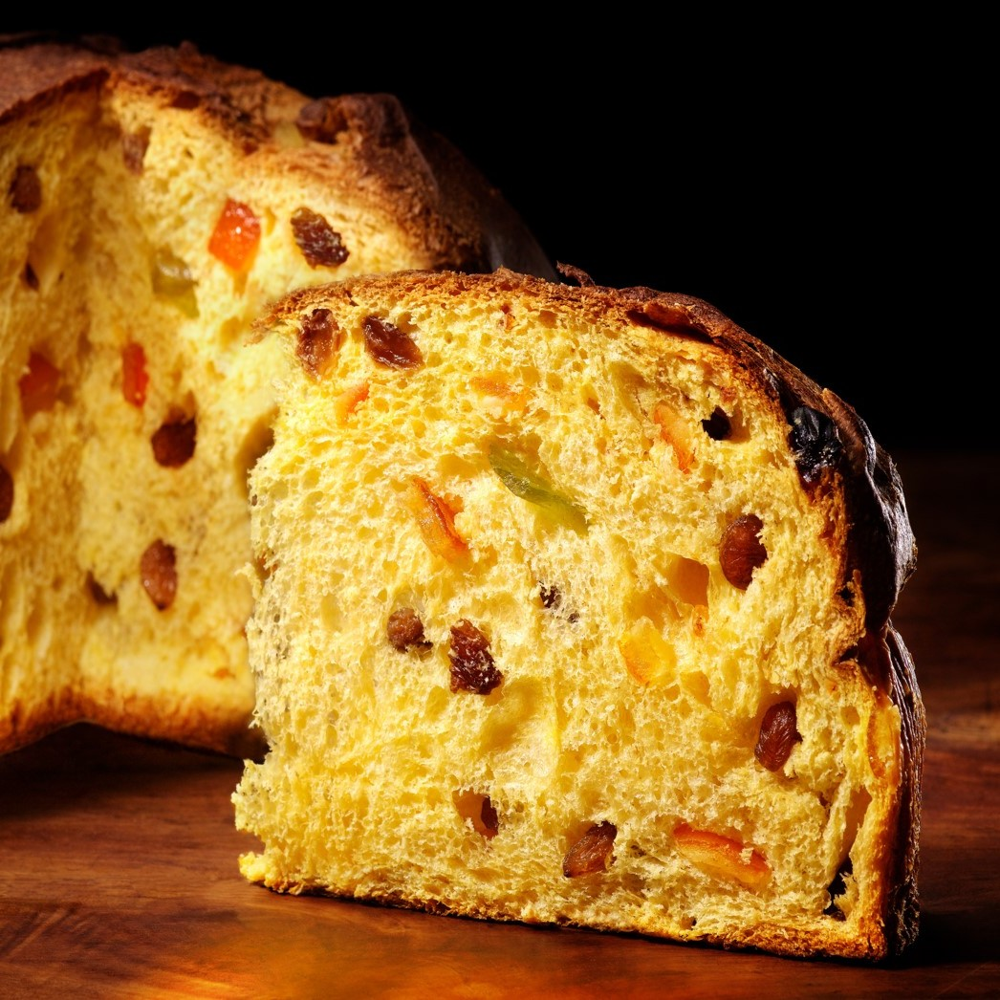

Schritt 01: Das lebendige Herz
Die Entstehung des Sauerteigs
Die Reise des Panettone beginnt mit seinem wertvollsten Bestandteil: dem Sauerteig. Dieser Teig, der lediglich aus Mehl, Wasser und Zeit entsteht, entwickelt sich auf natürliche Weise weiter und bildet eine einzigartige Identität aus. Sorgfältig gepflegt und über Generationen weitergegeben, verleiht er dem Panettone einen authentischen Geschmack, der von der Region erzählt, aus der er stammt.

Schritt 02: Die Zeit und die Geduld
Natürliche Gärung
Durch eine langsame natürliche Gärung sorgt der Sauerteig für komplexe Aromen und eine luftige Struktur. Im Gegensatz zu industriellen Verfahren erfordert dieser Prozess Zeit und Hingabe, verleiht dem Panettone jedoch eine luftige Konsistenz und einen vollmundigen Geschmack, die mit Schnellverfahren unmöglich zu erreichen sind.

Schritt 03: Die Kunst des Teigknetens
48 Stunden Pflege
Der Teig entsteht in einem langwierigen Prozess, der etwa 48 Stunden dauert und sich aus Kneten, Ruhephasen und Gärvorgängen zusammensetzt. In dieser Phase werden Eigelb von frischen Eiern und Butter gekonnt untergemischt, wodurch eine reichhaltige, aber perfekt ausgewogene Grundlage entsteht, die die außergewöhnliche Leichtigkeit des Teigs trägt.

Schritt 04: Die Schätze des Teigs
Das Hinzufügen der Zutaten
Jetzt ist es an der Zeit, den Teig mit erlesenen Zutaten zu verfeinern: kandierte Früchte, Rosinen oder köstliche Schokoladentropfen. Wenn man sie beim letzten Kneten vorsichtig unterhebt, verteilen sie sich gleichmäßig im Teig und sorgen in jedem Stück für ein Geschmackserlebnis.

Schritt 05: Die Geste der Tradition
La Scarpatura
Vor dem Backen wird jeder Panettone von Hand mit einem Kreuzschnitt versehen, einer symbolischen Geste, die als „Scarpatura“ bezeichnet wird. Dieses Zeichen lenkt das endgültige Aufgehen im Ofen und ermöglicht es dem Gebäck, seine charakteristische Kuppelform anzunehmen.

Schritt 06: Die umgekehrte Ruhe
Perfekte Kühlung
Sobald der Panettone aus dem Ofen kommt, wird er auf den Kopf gestellt und hängend abkühlen gelassen. Dieser entscheidende Schritt bewahrt seine lockere Struktur und verhindert, dass die Kuppel zusammenfällt, wodurch seine Leichtigkeit erhalten bleibt.

Schritt 07: Das finale Meisterwerk
Ein Erlebnis zum Genießen
Das Ergebnis ist ein Panettone mit einer weichen, seidigen Krume, durchzogen von vertikalen Poren, die von einem perfekten Gärprozess zeugen. Reichhaltig und doch ausgewogen – ein Gebäck, das Geduld, Tradition und handwerkliches Können in sich vereint und bereit ist, zum Star der Festtage zu werden.
